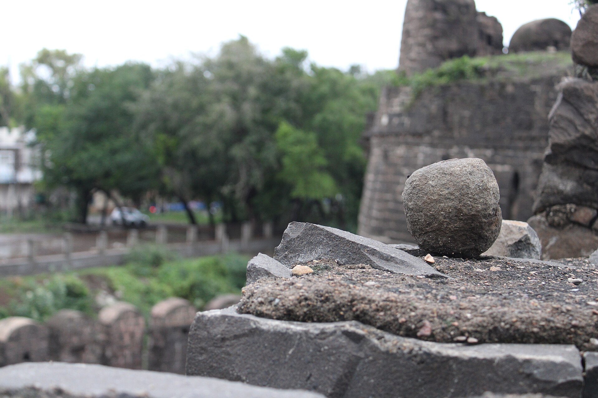
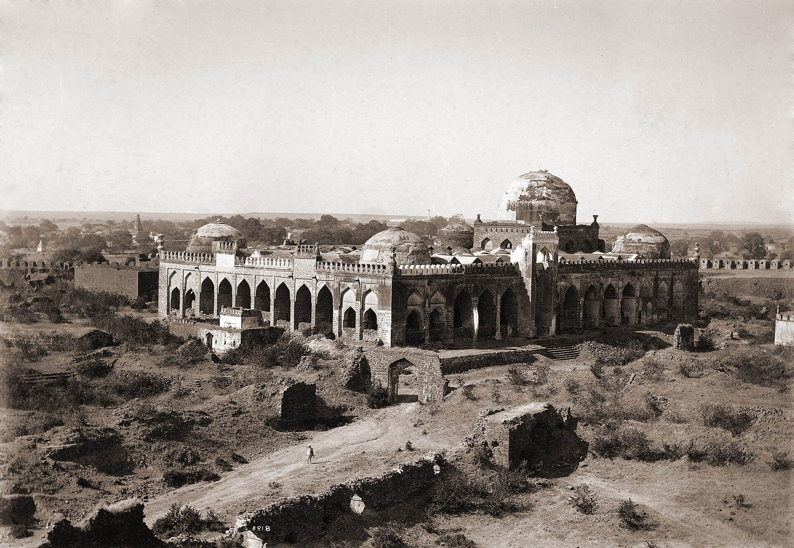
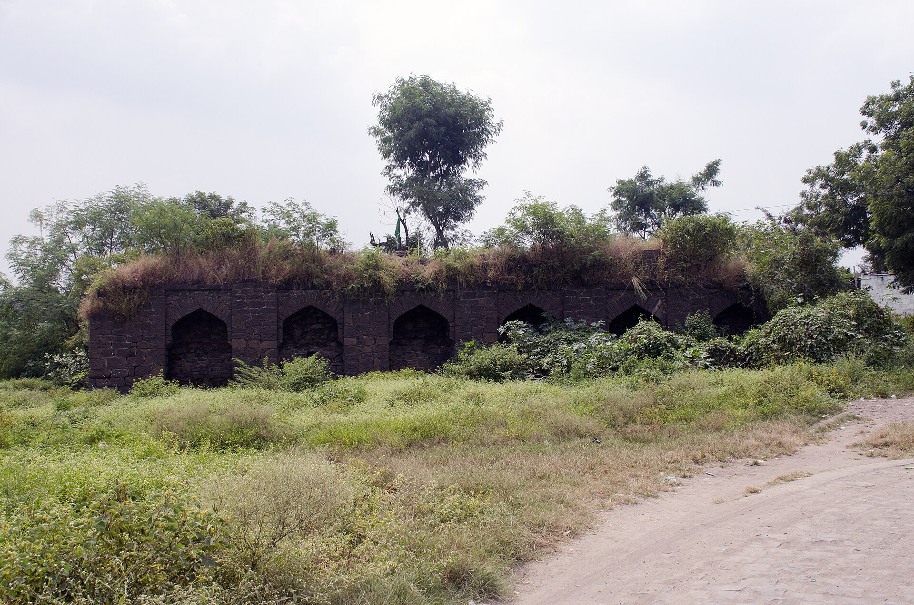
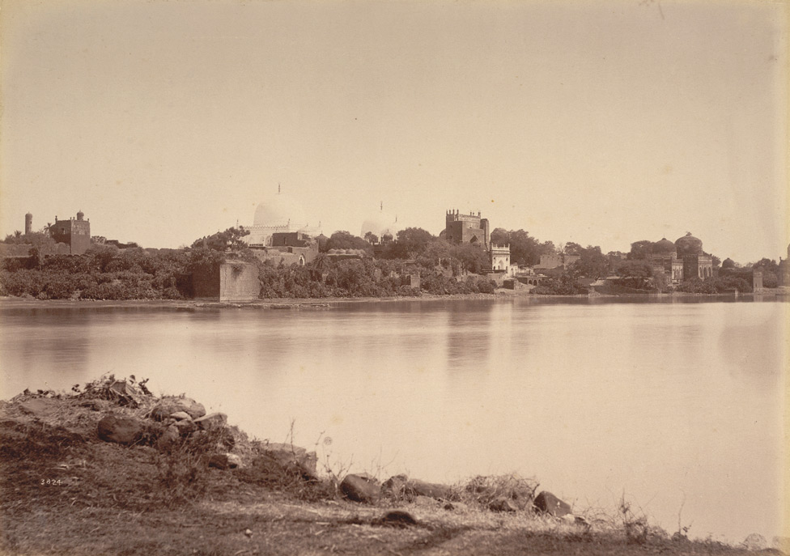
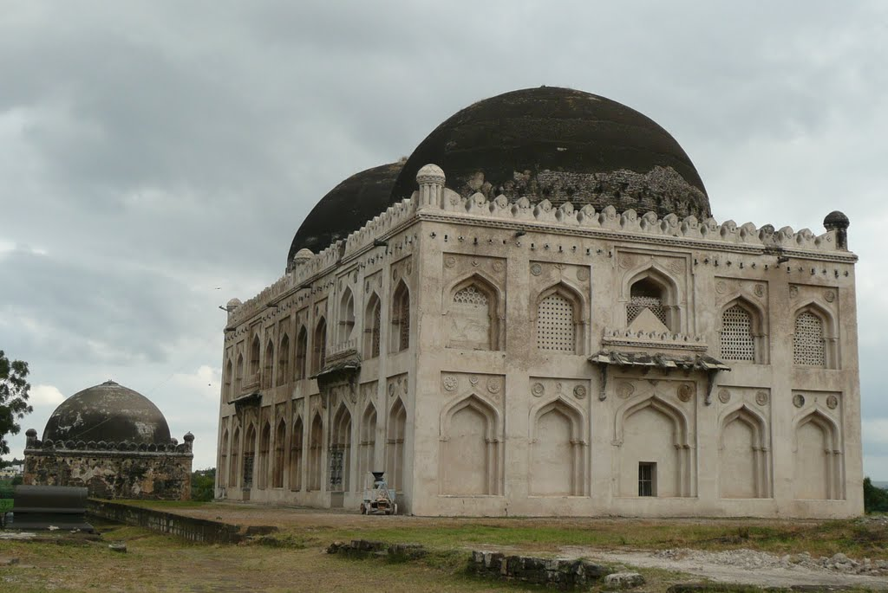
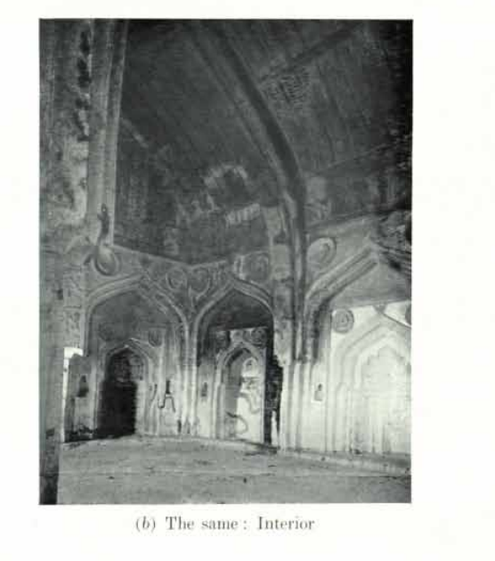
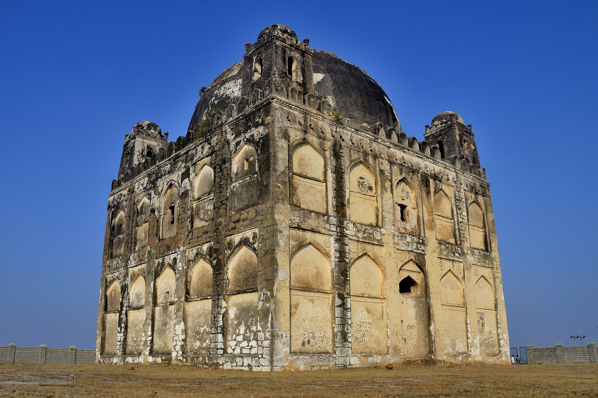

Gulbarga Fort
1347 onward
Fifty-seven acres inside a double wall and a moat nine metres wide, with fifteen towers and twenty-six guns — the largest of them a welded-bar cannon some eight metres long.
3 · Ahsanabad — first throne of the Bahmanis
Bahmani capital 1347 – 1432
The Deccan's first independent Muslim kingdom was founded here by a man who, in the story his own court told, began life behind a plough. Gulbarga gave the Bahmanis their fort, their strange roofed mosque, their artillery and their saint — and, within a century, lost the capital to a hill with better water.
Ferishta tells it beautifully. The founder, in his own court's telling, began as a hired ploughman on land near Delhi belonging to a Brahmin astrologer called Gangu. The plough turned up a pot of old coin, and the whole of it went to the landlord without a piece missing.
The astrologer did two things with that. He mentioned the honesty at court, where it was worth a command of a hundred horse; and he drew up the young man's chart, where he found a crown. The bargain he proposed was modest and very specific: the name, and the treasury. Hasan agreed, became Hasan Gangu, and kept both promises — the beginning, Gribble notes, of a Deccani custom followed for two centuries of trusting Hindus with revenue and finance.
The explanation he gave late in life was not a soldier's. He had been affable to friends and enemies alike, he said, and open-handed with everyone as far as his means allowed.
The dynasty's name points somewhere else entirely. 'Bahman' is the Persian hero Bahman son of Isfandiyar, of the Shahnama, and the Bahmanis claimed descent from him — a standard Persianate royal genealogy for a new dynasty needing legitimacy against Delhi.
Ferishta wrote some 250 years after the events, and the tale has the shape of court romance: honesty rewarded, prophecy fulfilled, a Hindu astrologer legitimising a Muslim king. Several historians read it as a founding myth designed to bind a new sultanate to its overwhelmingly Hindu population.
The near-contemporary sources cannot agree either. Isami, writing in 1350 under the founder's own patronage, places him at Ghazni; Barani says only that he was born in very humble circumstances and was a field labourer for thirty years — the ploughman, without any of the Gangu apparatus. Afghan, Turkic, Persian and Brahmin-convert origins have all been argued. Nothing is settled.
What survives at Gulbarga is not a palace but a machine for holding ground. Fifty-seven acres inside a double wall, three kilometres round, ringed by a moat nine metres across cut into the rock, with fifteen towers on it. Twenty-six guns are still lying on the ramparts. The largest is about eight metres long, built the way early Indian heavy ordnance was built — iron bars laid side by side and welded into a tube, then bound with hoops like a barrel.
That gun is the point of the place. Muhammad Shah I inherited a kingdom his father had improvised and gave it the apparatus of a state: ministries, provincial governors on fixed terms, a standing army paid from the treasury, and above all artillery, worked by Turkish and European gunners who had come south looking for employment. Gulbarga had cannon on its walls while Delhi was still fighting without them.
For eighty-five years every campaign against Vijayanagara went out from this gate and came back to it, and the arithmetic the chroniclers give for those wars is frankly unusable — Ferishta counts the dead in hundreds of thousands and says the country south of the Krishna did not recover for generations. What is certain is narrower and grimmer: the Raichur Doab changed hands so often that Gribble simply calls it a debatable land, and Gulbarga spent its whole century as a capital within a week’s march of a front.
All of it ended inside a single season in 1432, when the court packed up for Bidar. The guns stayed where they were, and they are still there.
Nearly every Bahmani–Vijayanagara war was fought over the same ground: the tongue of land between the Krishna and the Tungabhadra, with the fortresses of Raichur and Mudgal in it.
It was fertile, it commanded the approaches to both kingdoms, and it lay astride the diamond country. It changed hands so often across two centuries that Gribble simply calls it a debatable land.
Firoz Shah Bahmani was the most cultivated of the line: astronomer, calligrapher, builder of an observatory near Daulatabad, and — by Ferishta's account — able to speak with each woman of his household in her own language, Arabic, Persian, Turkish, Kannada, Marathi or Telugu. He took three days a week away from court to lecture on geometry. He sent ships each year from Goa and Chaul with orders to bring back not only goods but talent.
He invited Hafiz of Shiraz. The poet embarked, met heavy weather in the Gulf, decided the game was not worth the candle, and sent an ode instead. Having embarked at all was held to be enough, and the fee went to Shiraz anyway: a thousand gold pieces for a poem written in place of a visit.
He was undone by a saint. Khwaja Bandanawaz Gisu Daraz, a Chishti of Delhi who fled Timur's sack and settled here in 1400 at nearly eighty, became the most influential religious figure in the Deccan, and backed the sultan's brother Ahmad for the succession. Firoz had Ahmad blinded; Ahmad's faction rose; Firoz was deposed in 1422 and died within days of the saint himself.
Ahmad Shah Wali, marching back from a campaign, halted at the old town of Bidar, liked its height, its air and above all its water, and moved the kingdom there. The new capital was finished in 1431–32 and the court left Gulbarga for good.
What stayed was the saint. The dargah of Gisu Daraz still draws several hundred thousand pilgrims at its annual urs, Hindu as well as Muslim — one of very few institutions in this entire history with continuous life from the fifteenth century to now.
Gulbarga's Jama Masjid of 1367 is unique among the great mosques of India: it has no open courtyard at all. The entire sahn is roofed — one large dome over the mihrab bay, four at the corners, and some sixty-three small domes carried on around 250 arches, with wide low piers open on three sides.
Guidebooks routinely say it was modelled on the great mosque of Córdoba, sometimes by a Córdoba-trained architect. That stronger claim does not survive scrutiny: there is no documented link, and the roofed hypostyle solution is far better explained by the Deccan monsoon and by Tughluq and Persian precedent.
What specialists do say is that its mihrab ranks among the finest in the Islamic world, and that Córdoba is the comparison that comes to mind. Somewhere between the two statements, a fact turned into a legend.
“By affability to friends and enemies, and by showing liberality to all to the utmost of my power.”Ala-ud-din Hasan Bahman Shah, asked how he had won a kingdom
A double-walled fort on the west of the old town, with the tombs strung out east and the saint's dargah to the north-east, and Firoz Shah's abandoned pleasure-capital thirty kilometres south, off the edge of this plan.

1347 onward
Fifty-seven acres inside a double wall and a moat nine metres wide, with fifteen towers and twenty-six guns — the largest of them a welded-bar cannon some eight metres long.

1367
The mosque with no courtyard: sixty-three small domes and 250 arches roofing the entire prayer space. Attributed to a Persian architect, Rafi of Qazvin, and on the UNESCO tentative list.

15th c.
The inner works, with the great gun mounted on the rampart and the palace ranges behind — the seat of the Deccan's first independent Muslim state for eighty-five years.

from 1422
The tomb of the Chishti saint who came south at nearly eighty, wrote in Persian, Arabic and early Dakhni, unmade one sultan and made another. Its urs still draws hundreds of thousands.

14th–15th c.
Seven tombs in a row east of the fort, four of them royal. Firoz Shah's is the largest and the finest — double-chambered, and the last word of Gulbarga's century.
14th c.
The Friday mosque outside the walls, on the market street — where the city's ordinary religious life happened, as opposed to the court's.

15th c.
A Sufi hospice-mosque south-east of the fort, fully domed inside: the free kitchen and the prayer hall built as one institution.

15th c.
A single vast anonymous dome on a bare hillock west of the fort, famous for its echo and for the fact that nobody knows for certain who is buried in it.
1399
Thirty kilometres south on the Bhima — Firoz Shah's planned pleasure-capital, its walls and Jami Masjid still standing in open country, its grid still legible from the air.